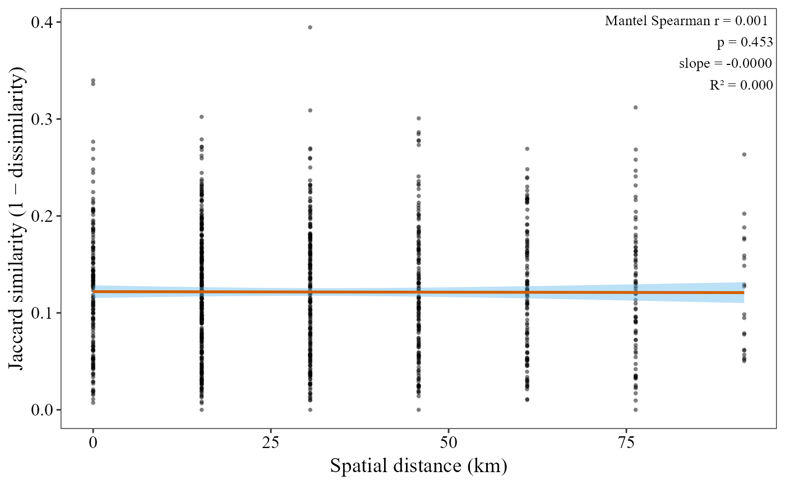
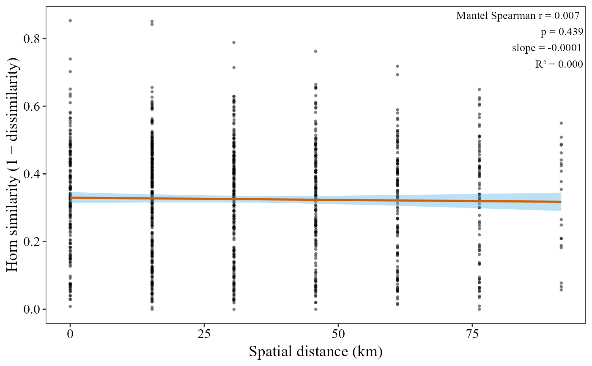
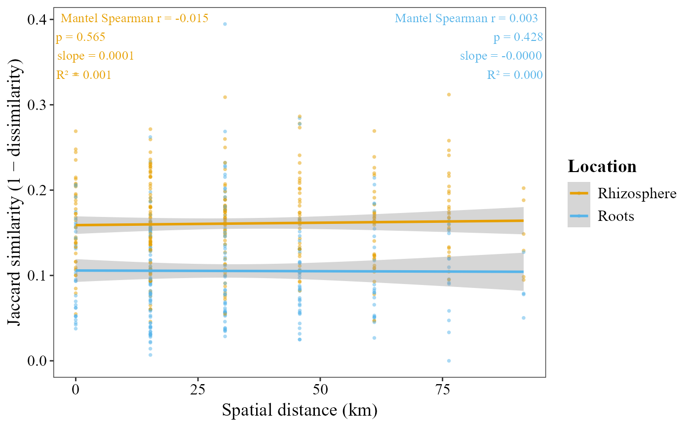

Computes pairwise community dissimilarity (Jaccard, Horn/Morisita-Horn,
Bray-Curtis, or other vegan::vegdist methods) and pairwise
geographic distances (Haversine formula, km) from sample coordinates
stored in metadata. It runs a Mantel test to evaluate the
relationship between community similarity (1 − dissimilarity) and
geographic distance, fits a linear regression, and returns a scatter plot
annotated with the Mantel statistic, p-value, and regression slope.
beta_decay_plot(
table,
metadata,
lat_col,
lon_col,
group_col = NULL,
palette = "colorb",
distance = "jaccard",
method = "spearman",
permutations = 999,
show_lm_stats = TRUE,
point_color = "black",
line_color = "#D55E00",
point_size = 1,
point_alpha = 0.5,
annotation_size = 3.5,
x_axis_title = "Spatial distance (km)",
y_axis_title = NULL,
title = NULL
)A data frame with taxa as rows and samples as columns.
Must contain a column named taxonomy (any position).
A data frame whose first column contains sample
identifiers matching the column names of table. Must also contain
latitude and longitude columns (see lat_col and lon_col).
Character. Name of the latitude column in metadata
(decimal degrees).
Character. Name of the longitude column in metadata
(decimal degrees).
Character or NULL. Optional categorical column in
metadata (e.g. "estado2"). When supplied, sample pairs from
different groups are dropped, and a separate Mantel test, regression
line, and annotation are computed within each group (matching
what you'd get running beta_decay_plot once per group), all drawn
on the same plot colored by group. When NULL (default), a single
global Mantel test is run on all samples, as before.
Only used when group_col is supplied. Either a
palette name ("colorb" default, "grey", "viridis",
"brewer") or a vector of fixed colors, one per group level.
Character. Dissimilarity metric passed to
vegan::vegdist. Common options: "jaccard" (default),
"horn" (Morisita-Horn / Hill q = 1 analogue), "bray"
(Bray-Curtis). Any method accepted by vegdist is valid.
Character. Correlation method for the Mantel test.
"spearman" (default) or "pearson".
Integer. Number of permutations for the Mantel test.
Default 999.
Logical. If TRUE (default), adds R² to the
annotation label in addition to the Mantel r, p-value, and slope.
Character. Color of scatter points. Default
"black", matching alpha_hill_corrplot/alpha_decay_plot.
Character. Color of the regression line. Default
"#D55E00", matching alpha_hill_corrplot/alpha_decay_plot's
ungrouped color scheme. The confidence-interval ribbon uses that same
scheme's fill, "#56B4E9".
Numeric. Size of scatter points. Default 1.
Numeric (0–1). Transparency of scatter points.
Default 0.5.
Numeric. Font size for the stats annotation.
Default 3.5.
Character. X-axis label.
Default "Spatial distance (km)".
Character or NULL. Y-axis label. If NULL
(default), it is built automatically from the distance method,
e.g. "Jaccard similarity (1 − dissimilarity)".
Character or NULL. Plot title. Default
NULL (no title).
A ggplot object.
table_path <- system.file("extdata", "tabla_bacteria.txt", package = "MicroBioMeta")
table <- read.delim(table_path, row.names = 1, check.names = FALSE)
metadata_path <- system.file("extdata", "metadata_bacteria.txt", package = "MicroBioMeta")
metadata <- read.delim(metadata_path, check.names = FALSE)
colnames(metadata)[1] <- "SampleID"
# beta_decay_plot requires lat/lon columns, which this bundled example
# dataset doesn't have. These coordinates are synthetic (one made-up
# point per 'Loc' site code) purely to demonstrate the function - use
# your own metadata's real coordinates for an actual analysis.
loc_coords <- data.frame(
Loc = 1:7,
lat = 19.0 + seq(0, 0.6, length.out = 7),
lon = -99.0 + seq(0, 0.6, length.out = 7)
)
metadata$lat <- loc_coords$lat[match(metadata$Loc, loc_coords$Loc)]
metadata$lon <- loc_coords$lon[match(metadata$Loc, loc_coords$Loc)]
# Jaccard + Spearman Mantel (default)
beta_decay_plot(
table = table,
metadata = metadata,
lat_col = "lat",
lon_col = "lon"
)

# Horn dissimilarity + Spearman Mantel
beta_decay_plot(
table = table,
metadata = metadata,
lat_col = "lat",
lon_col = "lon",
distance = "horn",
method = "spearman"
)

# Separate Mantel test per location
beta_decay_plot(
table = table,
metadata = metadata,
lat_col = "lat",
lon_col = "lon",
group_col = "Location"
)
